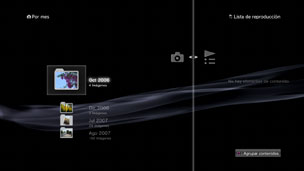

Foto > Uso de listas de reproducción > Crear / reproducir listas de reproducción
Crear / reproducir listas de reproducción
Puede agrupar imágenes de entre las guardadas en el almacenamiento del sistema y reorganizarlas en el orden que desee para crear y reproducir listas de reproducción.
1. |
Seleccione |
|---|---|
2. |
Seleccione (Crear nueva lista de reproducción). Siga las instrucciones que aparecen en pantalla para crear la lista de reproducción. |
3. |
Seleccione una lista de reproducción creada y luego pulse el botón |
4. |
Seleccione [Editar].  |
5. |
Seleccione la imagen que desea agregar a la lista de reproducción. |
 (Foto) >
(Foto) >  (Listas de reproducción).
(Listas de reproducción). para detener la edición. Puede reproducir la lista de reproducción creada en
para detener la edición. Puede reproducir la lista de reproducción creada en Notas
- Solo se pueden añadir a la lista de reproducción las imágenes que se han guardado en el almacenamiento del sistema.
- Puede iniciar una galería o imprimir una imagen durante la exploración de imágenes de una lista de reproducción. Seleccione el icono de una imagen de la lista de reproducción y, a continuación, pulse el botón
 . En el menú de opciones, seleccione [Galería] o [Imprimir].
. En el menú de opciones, seleccione [Galería] o [Imprimir].